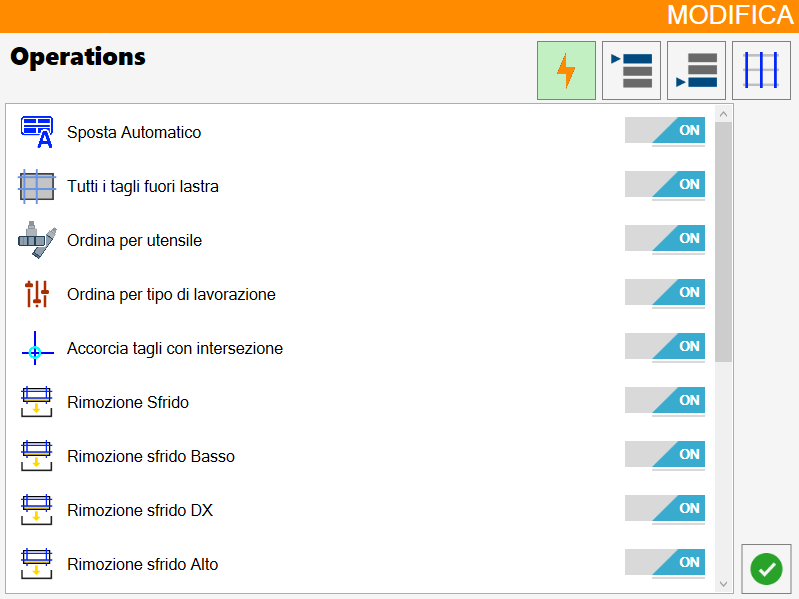
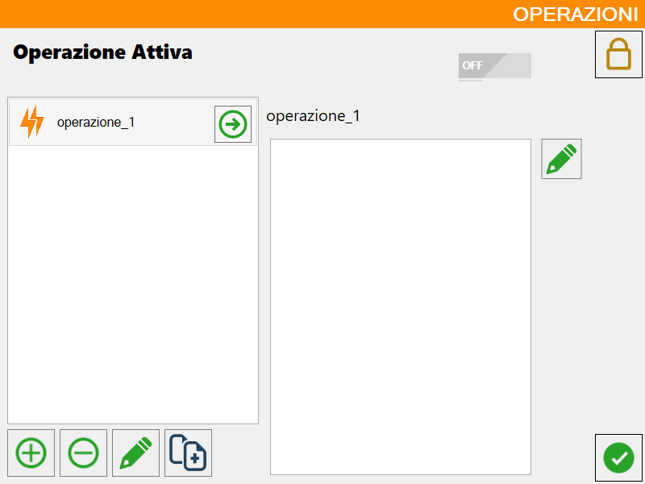
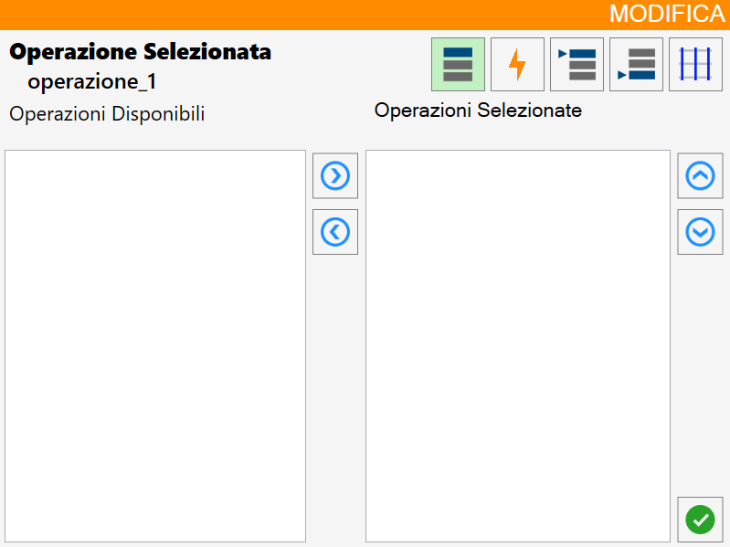

Inside the user parameters panel, in the first user values window we find a 'Active Operation' where next to it the operation the operator has activated is displayed, if you want to add, modify or delete you must press on the pencil next to it and this window opens:

Bottom bar buttons
Buttons for the generic management of macros
 | Activate/Deactivate operations in Automatic |
Manage operations |
Buttons to manage the macro list:
 | Add |
 | Delete |
Modify name | |
Copy |
Button to manage the content of a single macro:
Modify operation |
Manage operations
The following window opens where you can choose whether or not to activate an operation for each of the four types of operations that will be illustrated below (Standard, Workings ordering in head, Workings ordering in queue and Ordering based on cuts):

Add operation
The following window opens that allows you to set the name for the new working:

Once confirmed the choice of the new macro name, this will be added in the left panel and will initially be empty:

Modify operation
Below is shown the window of edit relative to the selected operation:

Selected operations buttons
Sorting by working | |
Standard Operations | |
Sorting workings in head | |
Sorting workings in queue | |
 | Sorting based on cuts |
Buttons of management of the operations
Add/remove operation | |
Move Sort |
Invert order of operations (Optional)
You can choose to activate this optional that allows to invert the order of the operations.
If for example I press on the following operations:
First bottom cuts
External internal
First left cuts
The real order of operations is:
First left cuts
External internal
First bottom cuts
Why are the positions overwritten, so to make the order of the operations chronological there is this optional.
With it in this case the order of operations is this:
First bottom cuts
External internal
First left cuts
Activation of a macro
When the macro has been created and modified as you like, it is possible to select it and activate it.
 | Enable macro disabled |
Enable macro enabled | |
 | Macro activated |
Procedure creation and loading of a macro
The first step consists of ensuring that the activation button is set on ON, to be able subsequently to employ the desired macro.
You proceed with the creation of a new operation setting a name, you click below on the new operation visible from now in the list and immediately after on the modify button on the right side of the panel to have access to the panel that allows to modify the macro.
For each type of operation, select the desired operations from the list on the left (Available) and add them to the list of selected operations. You can then proceed to confirm the configuration to view and manage it in the operations panel.
It is possible to make the loading of the macro by clicking the button placed just to the right of the name of the macro.
Below is provided an example of the macro named 'operation_1', containing 3 operations visible on the right, and highlighted in green with the corresponding symbol because in 'loaded' status.
The first step is to ensure that the activation button is set to ON, condition necessary to be able to use the desired macro. Once activated, proceed with the creation of a new operation, assigning it an identificative name. After having created it, the operation will appear in the list: it is therefore necessary to select it and click on the modification button located on the right side of the panel, so as to access the macro configuration interface.
Inside this interface, for each type of operation, it is possible to select the desired items from the left list (labeled as 'Available') and add them to the right list, which represents the selected operations. Completed the selection, it is sufficient to confirm the configuration to make it visible and manageable in the panel of operations.
The macro loading can be performed by clicking on the appropriate button, located immediately to the right of the name assigned to the macro. By way of example, consider the macro named 'operation_1': this includes three operations, displayed in the panel to the right, and is highlighted in green with the appropriate symbol indicating its 'loaded' status.